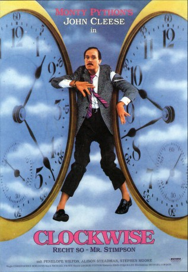

gesehen am 17.12.2018
gesehen am 17.12.2018Alternativ: Clockwise (Englischer Titel) gesehen am 17.12.2018
 
 IMDB-Wertung: 6.6 / 10
IMDB-Wertung: 6.6 / 10  Metascore:
Metascore: 
Pünktlichkeitsfanatiker Brian Stimpson hat es Dank seiner Effizienz geschafft, als Direktor einer unbedeutenden öffentlichen Schule den Vorsitz der Rektorenkonferenz in Norwich übernehmen zu dürfen. Natürlich hat er die Reise dorthin minutiös geplant, doch nachdem er aufgrund eines Missverständnisses seinen Zug verpasst und den Text seiner Rede verloren hat, führen alle Versuche, die Dinge wieder ins Lot zu rücken, unweigerlich zu noch größerem Chaos.
Jahr: 1986
Dauer: 96 Minuten
FSK: 12
Land: England Studio: Cannon Screen EntertainmentTonspuren:
Untertitel:
Auflösung: 1080p (1920x1080) Größe: 4198 MB
Genre: Komödie
Regisseur: Christopher Morahan
Drehbuch: Michael Frayn
Soundtrack: George Fenton
Darsteller:
 John Cleese als Brian Stimpson
John Cleese als Brian Stimpson Alison Steadman als Gwenda Stimpson
Alison Steadman als Gwenda Stimpson Joan Hickson als Mrs. Trellis
Joan Hickson als Mrs. Trellis Ann Way als Mrs. Way
Ann Way als Mrs. Way Richard Ridings als Policeman at Crash
Richard Ridings als Policeman at Crash Penelope Wilton als Pat
Penelope Wilton als Pat Benjamin Whitrow als Headmaster
Benjamin Whitrow als Headmaster Geoffrey Palmer als Headmaster
Geoffrey Palmer als Headmaster Peter Cellier als Headmaster
Peter Cellier als Headmaster Patrick Godfrey als Headmaster
Patrick Godfrey als Headmaster Philip Voss als Headmaster
Philip Voss als HeadmasterDatei: X:\1986\Clockwise - Recht so, Mr. Stimpson (1986, FSK12, 1920x1080).mkv seit 16.12.2018
Festplatte: HD 1980-1986
 Es gibt insgesamt 50 Filme in der Gruppe '1986'
Es gibt insgesamt 50 Filme in der Gruppe '1986'